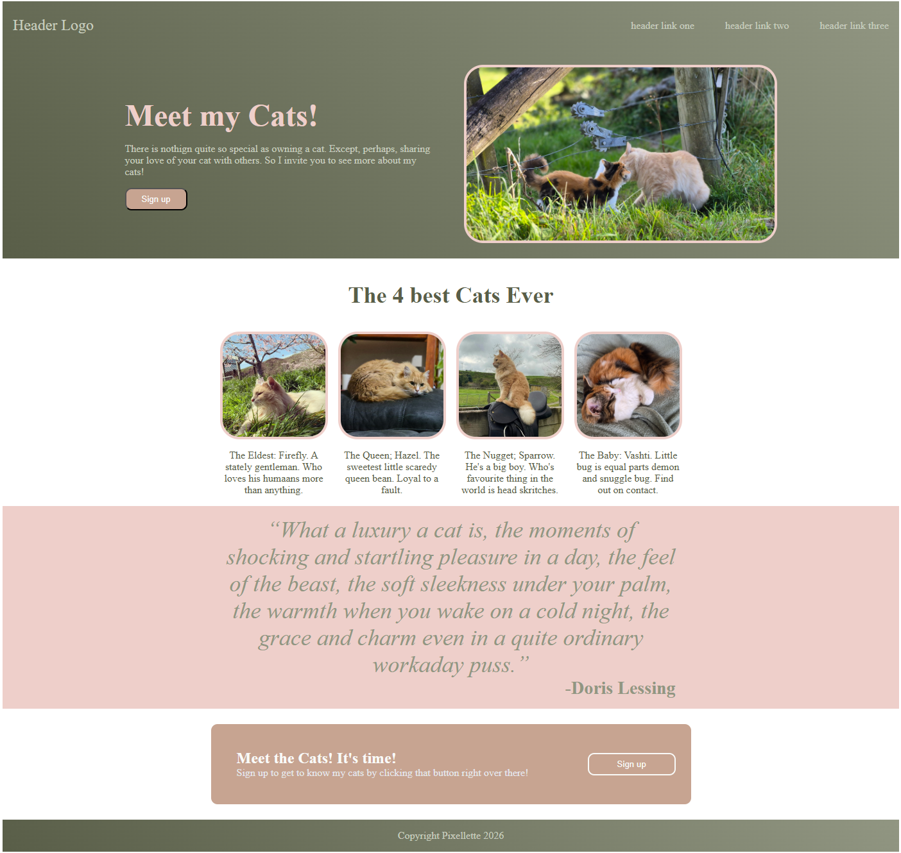

Link to GitHub Repository
Link to the page itself
This project was done as part of exploring The Odin Project to continue learning and practicing skills. It specifically was about practicing using CSS to build a basic website layout using Flexbox. We were told not to worry about making it cope with different sizes, but that we were welcome to customise it. I chose to customise mine by making it about my cats.
Designed to look like a generic landing page.
While some sizes are hard coded the main idea was to try to copy a template website design we were given using flexbox layout in CSS.
The Project was published to GitHub pages and can be found at this address: https://pixellette.github.io/TOP-Landing-Page/
We were told that some things we had to do for this project were beyond the scope of what we had been taught, and so we would need to do our own researching on how to do these things. Some of the features I figured out myself were rounded borders and gradient backgrounds.
